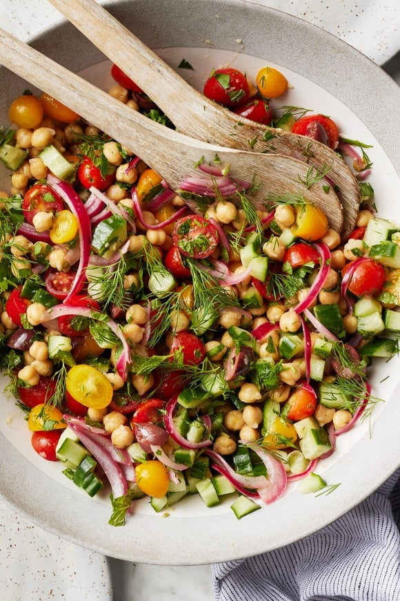

Chickpea Salad

Description
This easy chickpea salad recipe is satisfying and delicious. Filled with protein-packed garbanzo beans, fresh vegetables, and a zesty lemon dressing, it's a perfect picnic side dish or healthy lunch.
Ingredients
- 2 tablespoons extra-virgin olive oil
- 2 tablespoons fresh lemon juice
- 1 garlic clove, grated
- 1 tablespoon fresh lemon juice
- 1 teaspoon Dijon mustard
- 1 teaspoon sea salt
- 3 cups cooked chickpeas, drained and rinsed
- 2 cups mixed yellow and red grape tomatoes, halved
- ½ English cucumber, diced
- ½ cup Pickled Red Onions
- ½ cup kalamata olives, pitted and halved
- ½ cup chopped fresh parsley
- ¼ cup chopped fresh dill
- ¼ cup chopped fresh mint, plus whole mint leaves for garnish
- Freshly ground black pepper
Steps
- In a large bowl, whisk together the olive oil, lemon juice, garlic, mustard, salt, and several grinds of pepper.
- Add the chickpeas, tomatoes, cucumber, pickled onions, and olives and toss to coat. Add the parsley, dill, and mint and toss again.
- Season to taste, garnish with fresh mint leaves, and serve.